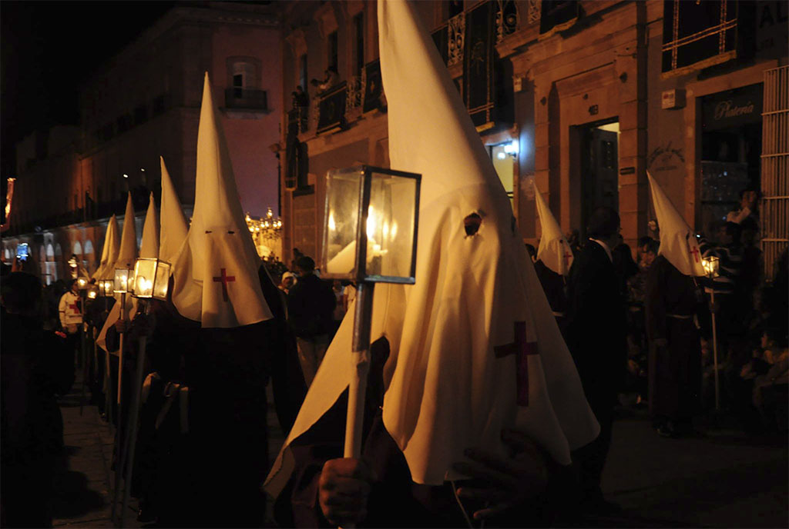
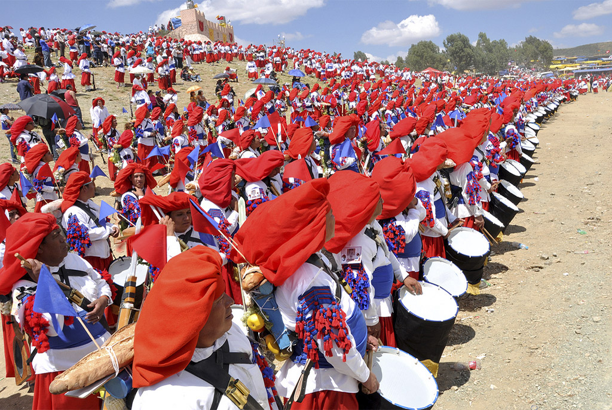

Las tres tradiciones más emblemáticas de la ciudad de Zacatecas son: la romería del 8 de septiembre que se realiza en honor a Nuestra Señora de los Zacatecas, patrona de la ciudad y dentro de marco del aniversario del descubrimiento de las minas de Zacatecas; la Morisma de Bracho, que se lleva a cabo el último fin de semana de agosto, durante las solemnidades del martirio de san Juan Bautista; y la Procesión del Silencio que se efectúa el viernes de la Semana Santa. Estas últimas dos tradiciones ya fueron declaradas patrimonio cultural inmaterial del estado de Zacatecas (en 2014 y 2015, respectivamente), mediante decreto de la Legislatura local, con la intención de preservarlas y transmitirlas a las futuras generaciones.
Tras el descubrimiento de las minas de Zacatecas ocurrido en 1546, la tradición de celebrar los días santos con una procesión silente llegó a Zacatecas a través de religiosos europeos que realizaron su labor misional en estas tierras chichimecas.
Con la finalidad de darle certidumbre a la preservación de esta tradición, el 7 de diciembre de 2004, fue instituida legalmente la asociación civil denominada Procesión del Silencio de Zacatecas, integrada por un grupo de zacatecanos comprometidos en grado heroico con el rescate de las tradiciones más antiguas de esta ciudad al igual que lo hacen cientos de personas que participan cada Viernes Santo.
Procesión del Silencio En Semana Santa por Gobierno del estado de Zacatecas en Zacatecas.gob.mx
La Morisma de Guadalupe es una fiesta de corte profano - religioso, que se lleva a cabo 2 veces por año en el campo de los moros de la ciudad de Guadalupe, Zacatecas, México, representando la Batalla de Lepanto entre los cristianos y musulmanes en el año de 1571 con victoria para los cristianos. Los representantes pertenecen a la Corporación de San Juan Bautista.
El 8 de septiembre de 1546, uno grupo de exploradores españoles descubrieron plata en el lugar donde se localiza la ciudad. En 1548 comenzó la explotación del Real de Minas, al que se le dio el nombre de Nuestra Señora de los Remedios de los Zacatecas. Gracias a las riquezas obtenidas, el el 15 de octubre de 1585 el rey de España, Felipe II, concedió a la población el título de ciudad, llamándose desde entonces "Ciudad de Nuestra Señora de los Zacatecas" y el 20 de julio de 1588 su escudo de armas con la imagen de la Virgen.
En honor a este acontecimiento cada año, el 8 de Septiembre se honra a la patrona de la ciudad con una romería, que se compone de múltiples pregrinaciones provenientes del interior del estado, y además de eventos culturales, conciertos y exposiciones gastronómicas y culturales